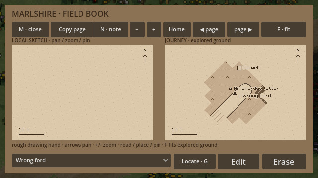
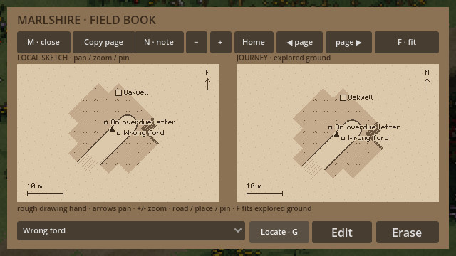

1 November 2026
Finding your own map notes
A field book becomes useful when you can return to what you wrote. In the county map, a note can now bring its own patch of surveyed ground back into the local sketch.
Select an annotation and choose Locate, or press G while reading the map. The sketch centres on that pin and returns to a readable local scale. Your traveller stays where they are.


A copied page keeps its own annotations. Locate follows the selected note on the page you are reading; it does not switch you back to the original book or change either page's wording.
Typing stays typing. The shortcut cannot pull the map away while you are writing, and an empty page has no location to follow. Locating a pin does not discover new ground, improve your drawing hand or walk the road for you.
This adds a small return path through a growing notebook: write what matters, explore elsewhere, then find that mark again.